Education and Work Experience
- Researcher, Microsoft Research Asia, 2010-present.
- Postdoctoral Fellow, advised by Prof. Bruno Levy, Alice Group, LORIA/INRIA, 2008-2010.
- Ph.D. in Computer Science, advised by Prof. Wenping Wang, The University of Hong Kong (HKU), 2008.
- Bachelor and Master degrees in Computational Mathematics, University of Science and Technology of China (USTC), in 2000 and 2003, respectively. Master's thesis supervised by Prof. Falai Chen and Prof. Yuyu Feng.
Professional Activities
- Executive Committee Member of Asiagraphics (2024-present)
- SMI Steering Committee (2024-present)
- Associate editor: IEEE TVCG (2019-2023, Best Associate Editor Award 2021), ACM Transactions on Graphics (2021-2024), IEEE Computer Graphics and Applications (2023-present)
- Conference Co-Chair: Shape Modeling International 2022, Geometric Modeling and Processing 2025
- Program Co-Chair: Shape Modeling International 2021, Geometric Modeling and Processing 2019
- Area Chair: International Symposium on Visual Computing 2022
- Communication Co-Chair: Shape Modeling International 2023/2024
- Guest Editor: J. CAGD (2019), Computer & Graphics (2021), IEEE Multimedia (2022)
- Program Committee: Siggraph Asia 2014/2019/2020/2022, SGP 2014/2015/2016/2018/2019/2020/2021/2022/2023/2024/2025, Pacific Graphics 2013/2014/2015/2016/2017/2018, GMP 2014/2015/2016/2017/2018/2020/2021/2023/2024/2026, SPM 2025/2026, Advances in Architectural Geometry 2014/2016/2018, CAD/Graphics 2013/2015/2017/2021, ChinaGraph 2018/2020/2022/2024, ChinaVR 2020/2024, CVM 2019/2020/2021/2022/2023, CCF CAD&CG 2018/2024/2026, CSIAM GDC 2017/2020, 3DRW 2018/2019
- Workshop organizer: First Workshop on Deep Learning Foundations of Geometric Shape Modeling and Reconstruction at CVPR 2020
Code
- HLBFGS: A hybrid L-BFGS optimization framework which unifies L-BFGS method, Preconditioned L-BFGS method, Preconditioned Conjugate Gradient method. (Source code in C++)
- QCVT: Fast 3D Centroidal Voronoi Tessellation for a convex domain. (Windows executable files only)
- 3D Voronoi Tessellation and Restricted Voronoi Diagram. Source code is available in the supplemental material of LpCVT paper.
Gallery and Models
- Discrete Surfaces in Isotropic Geometry: some nice quadrilateral and hexagonal meshes are available.
Supervised Intern Students
- Youkang Kong (PHD candidate from Tsinghua University, 2024.4--now)
- Mingjia Yang (PHD candidate from Beihang University, 2024.9--2025.6)
- Yingrui Wu (PHD candidate from University of Chinese Academy of Sciences, 2024.9--2025.5)
- Jiwoong Na (PHD candidate from KAIST, 2024.9--2025.3)
- Xin-Yang Zheng (PHD candidate from Tsinghua Univ., 2021.7--2024.9)
- Yu-Qi Yang (PHD candidate from Tsinghua Univ., 2017.7--2018.5, 2019.2--2024.1)，now work at WeRide
- Longfei Lu (Master candidate from Tsinghua Univ., 2023.6--2023.8)
- Jian-Yu Xiong (Master candidate from Tsinghua Univ., 2022.12--2023.5)
- Dr. Siming Yan (PHD candidate from UT Austin, 2022.5--2022.11), now work at Huawei
- Dr. Hao-Xiang Guo (PhD candidate, from Tsinghua Univ., 2018.1--2022.9), now work at Kunlun
- Jie Pan (Master candidate from USTC Univ., 2021.4--2022.8)
- Dr. Chun-Yu Sun (PhD Candidate, from Tsinghua Univ., 2016.11--2022.5), now work at Momenta
- Dr. Shi-Lin Liu (PhD Candidate, from USTC, 2014.7--2015.5, 2016.7--2021.6), now work at Momenta
- Xin Li (Master Candidate, from PKU, 2020.9-2021.3), now PhD candidate in NTU
- FengYuSheng Wang (Undergraduate, from USTC, 2019.2-2019.6, 2020.5--2020.9)
- Qian-Fang Zou (Master Candidate, from USTC, 2018.9--2020.4)
- Xiaohan Liu (Master Candidate, from UCAS, 2018.9--2019.1), now PHD student at Univ. of Tokyo
- Dr. Ran Zhang (PHD Candidate, from IST Austria, 2018.8--2018.11), now work at Tencent
- Ke Qu (Master Candidate, from Zhejiang Univ., 2018.6-2018.9), now work at Microsoft
- Dr. Chang-Jian Li (PhD Candidate, from HKU, 2016.2--2016.7, 2016.11--2018.1, 2018.5-2018.8), now assistant professor at Univ. of Edinburgh.
- Dr. Peng-Shuai Wang (PhD candidate, from Tsinghua, 2014.2--2018.7), now assistant professor at PKU.
- Dr. Xiao-Ming Fu (PhD Candidate, from USTC, 2012.9--2016.6), now associate professor at USTC.
- Dr. Chong-Yang Bai (Undergraduate, from USTC, 2015.9--2016.6), now work at Microsoft.
- Dr. Caigui Jiang (PhD Candidate, from KAUST, 2015.6--2015.8), now Professor at Xi'an Jiaotong University.
- Dr. Shuo Jin (PhD Candidate, from CUHK, 2014.8--2015.1)
- Dr. Shuang-Ming Chai (Undergraduate, from USTC, 2013.7--2014.5), now at Jiushao Intelligent Technology.
- Dr. Mario Deuss (PhD Candidate, from EPFL, 2013.6--2013.9)
- Dr. Pan Hao (PhD Candidate, from HKU, 2012.9--2013.1), now assistant professor at Tsinghua.
- Dr. Yufei Li (PhD Candidate, from HKU, 2011.9--2012.2), now at Citadel GQS.
- Dr. Jun Wang (PhD Candidate, from USTC, 2010.7--2011.1), now work at BaiDu.
Publications and Manuscripts
2026
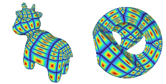
Youkang Kong, Yang Liu, Yue
Dong, Xin Tong,
Heung-Yeung
Shum:
SQuadGen: Generating
Simple Quad Layouts via Chart Distance
Fields,
ACM Transactions on Graphics, SIGGRAPH 2026. Project Page
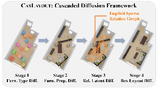
Yingrui Wu,
Youkang Kong, Mingyang Zhao, Weize Quan,
Dong-Ming Yan, Yang
Liu:
CasLayout: Cascaded 3D
Layout Diffusion for Indoor Scene Synthesis with Implicit Relation Modeling,
ACM Transactions on Graphics, SIGGRAPH 2026. Project Page
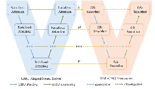
Yu Xing, Yang Liu, Tianyang Xue, Lin Lu: GMT: A Geometric Multigrid Transformer Solver for
Microstructure
Homogenization, ACM Transactions on Graphics, SIGGRAPH 2026. Project Page
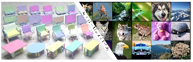
Rui Xu, Jiepeng Wang, Hao Pan,
Yang Liu, Xin Tong, Shiqing Xin, Changhe
Tu, Taku Komura and Wenping Wang: ComboStoc:
Combinatorial Stochasticity for Diffusion Generative Models, ACM Transactions on Graphics,
SIGGRAPH 2026.
2025
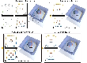
Yuqing Wang, Xiaohong Jia, Jieyin Yang, Bolun Wang, Pengbo Bo, Yang
Liu: Improving the Watertightness of Parametric Surface/Surface
Intersection, to appear in Computer Graphics Forum (CGF).
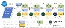
Yu Xing, Yang Liu, Lipeng Chen, Huiping Tang, Lin Lu: PCG-Informed
Neural Solvers for High-Resolution Homogenization of Periodic Microstructures, preprint.
Tianyang Xue, Lin Lu,
Yang Liu, Mingdong
Wu, Hao Dong, Yanbin
Zhang, Renmin Han, Baoquan Chen:
GFPack++:
Improving 2D Irregular Packing by Learning Gradient Field with Attention, ICCV 2025.
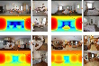
Ming-Jia Yang, Yu-Xiao Guo, Yang
Liu, Bin
Zou, Xin Tong:
LPA3D: 3D
Room-Level Scene Generation from In-the-Wild Images, accepted to Computational Visual Media
(J) Journal, 2025.
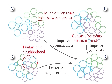
Duan Li, Jun Yuan, Xinyuan
Guo,
Xiting Wang, Yang
Liu, Weikai Yang, Shixia
Liu: NCP:
Neighborhood-Preserving Non-Uniform Circle Packing for Visualization, to
appear
in Computational Visual Media.
2024
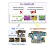
Mutian Xu, Xingyilang Yin, Lingteng Qiu, Yang
Liu, Xin
Tong, Xiaoguang Han: SAMPro3D: Locating SAM Prompts in 3D for
Zero-Shot Scene
Segmentation, 3DV 2024.
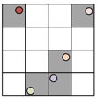
Yu-Qi Yang, Yu-Xiao Guo, Yang
Liu: Swin3D++:
Effective Multi-Source Pretraining for 3D Indoor Scene Understanding,
accepted to Computational Visual Media (J) Journal, 2024.
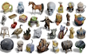
Xin-Yang Zheng, Hao Pan, Yu-Xiao Guo, Xin
Tong, Yang Liu: MVD²:
Efficient Multiview 3D Reconstruction for Multiview Diffusion, SIGGRAPH, conference
version, 2024. Project
Page
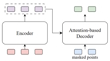
2023
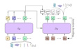
Jiepeng Wang, Hao Pan, Yang
Liu,
Xin
Tong, Taku Komura and Wenping Wang: StructRe: Rewriting
for Structured Shape Modeling, accepted to
ACM
Transactions on Graphics, 2025.
Yu-Qi Yang, Yu-Xiao Guo, Jian-Yu Xiong,
Yang Liu, Hao
Pan,
Peng-Shuai Wang, Xin
Tong, Baining
Guo: Swin3D: A
Pretrained Transformer Backbone for 3D Indoor Scene
Understanding, accepted to Computational Visual Media (J), 2023. Project
Page
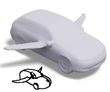
Xin-Yang Zheng, Hao Pan, Peng-Shuai Wang, Xin
Tong, Yang Liu, Heung-Yeung
Shum: Locally
Attentional SDF Diffusion for Controllable 3D Shape
Generation, ACM Transactions on Graphics (SIGGRAPH), Journal version, 2023. Project
Page
2022
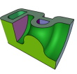
Hao-Xiang Guo, Yang
Liu, Hao Pan, Baining
Guo: Implicit
Conversion of Manifold B-Rep Solids by Neural Halfspace Representation,
ACM Transactions on Graphics (SIGGRAPH ASIA), 2022. [Project
page] [Code]
[Surface
Extraction
Code]
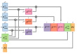
Chun-Yu Sun, Xin
Tong, Yang Liu: Semantic Segmentation-assisted Instance Feature Fusion for Multilevel
3D
part Instance Segmentation, Computational Visual Media (J), 2022. [Project
page]
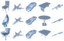
Xin-Yang Zheng, Yang
Liu,
Peng-Shuai Wang, Xin Tong:
SDF-StyleGAN: Implicit SDF-Based StyleGAN for 3D Shape Generation, Computer Graphics Forum
(SGP), 2022. [Supplemental]
[Project
page]
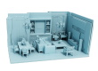
Peng-Shuai Wang, Xin Tong,
Yang Liu:
Dual Octree Graph Networks for Learning Adaptive Volumetric Shape Representations,
ACM
Transactions on
Graphics(SIGGRAPH), 2022. [Project
page]
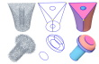
Hao-Xiang Guo, Shi-Lin Liu, Hao Pan, Yang Liu, Xin Tong, Baining Guo:
ComplexGen: CAD Reconstruction by B-Rep Chain Complex Generation,
ACM Transactions on
Graphics(SIGGRAPH), 2022. [Project page]
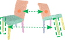
Chun-Yu Sun, Yu-Qi
Yang, Hao-Xiang Guo,
Peng-Shuai Wang, Xin Tong,
Yang Liu, Heung-Yeung
Shum:
Semi-Supervised 3D Shape Segmentation with Multilevel Consistency and Part Substitution,
Computational Visual Media (J). [Project
page]
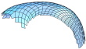
Zhi Deng, Yang Liu, Hao Pan,
Wassim
Jabi, Juyong
Zhang, Bailin Deng:
Sketch2PQ: Freeform Planar Quadrilateral Mesh Design via a Single Sketch, IEEE
Transactions on Visualization & Computer
Graphics. [video].
2021
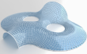
Long Ma, Sidan Yao, Jianming Zheng,
Yang Liu, Yuanfeng Zhou, Shiqing Xin,
Ying He: Constructing
Self-Supporting Surfaces with Planar Quadrilateral Elements,
Computational Visual Media (J), 2022.
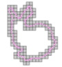
Yu-Qi Yang, Peng-Shuai Wang, Yang
Liu: Interpolation-Aware Padding for 3D Sparse Convolutional Neural Networks, ICCV
2021.
[Project
page]
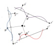
Peng-Shuai Wang, Yang
Liu, Yu-Qi Yang,
Xin
Tong: Spline
Positional Encoding for Learning 3D Implicit Signed Distance Fields, IJCAI
2021. [Project page]
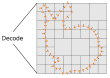
Shi-Lin Liu, Hao-Xiang Guo, Hao Pan, Peng-Shuai Wang, Xin
Tong, Yang Liu: Deep Implicit Moving Least-Squares Functions for 3D
Reconstruction,
CVPR 2021. [Code]
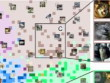
Changjian Chen, Jun Yuan, Yafeng Lu, Yang Liu, Hang Su, Songtao Yuan, Shixia
Liu: OoDAnalyzer:
Interactive Analysis of Out-of-Distribution Samples, IEEE TVCG, 2020. [Videos]
2020
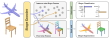
Peng-Shuai Wang, Yu-Qi Yang, Qian-Fang Zou, Zhirong Wu,
Yang Liu, Xin
Tong: Unsupervised 3D
Learning for Shape Analysis via Multiresolution Instance
Discrimination, AAAI 2021. [Project page]
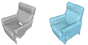
Peng-Shuai Wang, Yang
Liu, Xin
Tong: Deep
Octree-based CNNs with Output-Guided Skip Connections for 3D
Shape
and Scene Completion, CVPR 2020 Workshop. [Code]
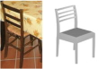
Qian-Fang Zou, Ligang Liu and
Yang Liu: Instance-level 3D shape retrieval from a single image by
hybrid-representation-assisted
joint embedding, The Visual Computer, 2020.
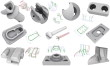
Hao-Xiang Guo, Xiaohan Liu, Dong-Ming Yan,
Yang Liu: Cut-enhanced
PolyCube-Maps for Feature-aware All-Hex Meshing, ACM
Transactions
on
Graphics (SIGGRAPH), 2020. [supplemental] [Project page]
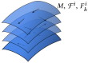
Yu-Qi Yang, Shi-Lin Liu, Hao Pan, Yang
Liu,
Xin
Tong: PFCNN: Convolutional Neural Networks on 3D Surfaces Using Parallel Frames,
IEEE
CVPR, 2020. [Project page]
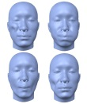
Shi-Lin Liu, Yang Liu, Lan-Fang Dong, Xin
Tong: RAS: A Data-driven Rigidity-Aware Skinning Model for 3D Facial
Animation, Computer Graphics Forum, 39(1), 581--594, 2020. [Videos]
2019
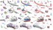
Lei Chu, Hao Pan, Yang
Liu, Wenping
Wang: Repairing
Man-Made
Meshes via Visual Driven Global Optimization with Minimum Intrusion, ACM Transactions on
Graphics (SIGGRAPH Asia), 38(6), Article 158, 2019. [Project page]
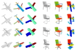
Chun-yu Sun, Qian-fang Zou, Xin
Tong, Yang Liu: Learning Adaptive Hierarchical Cuboid Abstractions of 3D Shape Collections,
ACM
Transactions on Graphics (SIGGRAPH Asia), 38(6), Article 241, 2019. [Project
page]
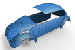
Lei Chu, Pengbo
Bo,
Yang Liu, Wenping Wang: Surface
Fairing towards Regular Principal Curvature Line Networks, Computer Graphics Forum (Pacific
Graphics), 2019.
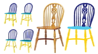
Jie Zhu, Yunfeng Zhang, Jie Guo, Huikun Liu, Mingming Liu, Yang Liu, Yanwen Guo: Label
Transfer between Images and 3D Shapes via Local Correspondence
Encoding,
Geometric Modeling and Processing - GMP 2019, Computer Aided Geometric Design, 71, 255-266.
2018
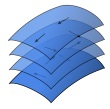
Hao Pan, Shi-Lin Liu,
Yang
Liu, Xin
Tong: Convolutional
Neural Networks on 3D Surfaces Using Parallel
Frames,
arXiv:1808.04952, 2018.
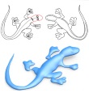
Changjian Li, Hao Pan, Yang
Liu,
Xin
Tong, Alla Sheffer,
Wenping
Wang: Robust Flow-Guided Neural Prediction for Sketch-Based Freeform Surface Modeling,
ACM Transactions on Graphics (SIGGRAPH Asia), 37(6), 2018. [Project page]
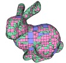
Peng-Shuai Wang, Chun-Yu Sun, Yang
Liu, Xin
Tong: Adaptive
O-CNN:
A
Patch-based Deep Representation of 3D Shapes, ACM Transactions on Graphics (SIGGRAPH
Asia),
37(6), 2018. [Project
page]
[Open source code]
2017
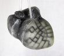
Li-Ke Ma, Yizhong
Zhang,
Yang Liu, Kun
Zhou,
Xin
Tong: Computational Design and Fabrication of Soft Pneumatic Objects with
Desired Deformations,
ACM Transactions on Graphics (SIGGRAPH Asia), 36(6), 2017. [Video] [Project page]
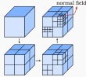
Peng-Shuai Wang, Yang
Liu,
Yu-Xiao Guo, Chun-Yu Sun, Xin
Tong: O-CNN: Octree-based Convolutional Neural Networks for 3D Shape
Analysis, ACM Transactions
on Graphics (SIGGRAPH), 36(4), 2017. [Project page] [Open
source code]
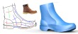
Changjian Li, Hao Pan, Yang
Liu,
Xin
Tong, Alla Sheffer,
Wenping
Wang:
BendSketch:
Modeling Freeform Surfaces Through 2D Sketching, ACM Transactions
on
Graphics
(SIGGRAPH), 36(4), 2017. [Project page]
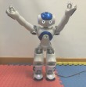
Shuo Jin, Chengkai Dai,
Yang
Liu, Charlie
C.L.
Wang:
Motion Imitation Based on Sparsely Sampled Correspondence,
Journal of Computing
and
Information Science in Engineering, 2017. [Video]
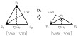
Saifeng
Ni,
Zichun Zhong,
Yang
Liu, Wenping
Wang, Zhonggui Chen, Xiaohu
Guo: Sliver-Suppressing Tetrahedral Mesh Optimization with Gradient-Based
Shape Matching
Energy,
Geometric Modeling and Processing - GMP 2017, Computer Aided Geometric Design, 52-53,
247-261.
2016
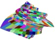
Yiqi Cai,
Xiaohu Guo, Yang
Liu,
Wenping
Wang,
Weihua
Mao,
Zichun Zhong: Surface Approximation via
Asymptotic Optimal Geometric Partition, IEEE Transactions on Visualization & Computer
Graphics,
23(12), 2613-2626, 2016. [Supplement] [Video]
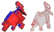
Xiao-Ming Fu, Chong-Yang Bai, Yang
Liu:
Efficient Volumetric PolyCube-Map Construction, Computer Graphics Forum
(Pacific
Graphics), 35(7), 2016. [Project
page] [Supplement]
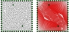
Xiao-Ming Fu,
Yang
Liu: Computing Inversion-Free Mappings by Simplex Assembly, ACM
Transactions on Graphics
(SIGGRAPH Asia), 35(6), 2016. [Project
page] [Supplement] [Code]
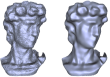
Peng-Shuai Wang, Yang
Liu,
Xin
Tong: Mesh Denoising via Cascaded Normal Regression, ACM
Transactions
on Graphics (SIGGRAPH
Asia), 35(6), 2016. [Project
page]
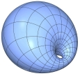
Pengbo Bo,
Yang
Liu, Changhe
Tu,
Caiming
Zhang, Wenping
Wang:
Surface Fitting with Cyclide Splines, Geometric Modeling and
Processing - GMP 2016,
Computer Aided Geometric Design, 43(1), 2--15.
2015
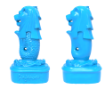
Peng-Shuai Wang, Xiao-Ming Fu, Yang
Liu, Xin
Tong, Shi-Lin Liu, Baining
Guo: Rolling
Guidance
Normal Filter for Geometric Processing, ACM Transactions on Graphics (SIGGRAPH Asia),
34(6), 2015.
[Data]
[Program] [Slides]
Xiao-Ming Fu,
Yang
Liu, Baining
Guo: Computing
Locally
Injective Mappings by Advanced MIPS, ACM Transactions on Graphics (SIGGRAPH), 34(4),
2015.
[Data]
Pan Hao, Yang
Liu,
Alla Sheffer, Nicholas
Vining,
Chang-Jian Li, Wenping Wang: Flow Aligned Surfacing
of Curve Networks, ACM Transactions on Graphics (SIGGRAPH), 34(4), 2015. [Data]
[Project
page]
Yufei Li, Yang
Liu, Wenping
Wang:
Planar
Hexagonal
Meshing for Architecture, IEEE Transactions on Visualization & Computer Graphics,
95-106, 2015.
IEEE TVCG spotlight article for Jan. 2015. [Appendix]
Before 2015
Xiao-Ming
Fu, Yang Liu, John Snyder and
Baining Guo: Anisotropic Simplicial Meshing
Using Local
Convex Functions, ACM Transactions on
Graphics(SIGGRAPH Asia) 33(6), 2014. [DOI], Anisotropic Mesh results, slides.
Mario
Deuss, Daniele Panozzo,
Emily Whiting, Yang
Liu,
Philippe Block, Olga Sorkine-Hornung and Mark Pauly: Assembling
Self-Supporting Structures,
ACM Transactions on Graphics(SIGGRAPH Asia) 33(6),
2014. [DOI], Video
and data.
Project
page.
Lei Liu, Yongjie Zhang, Yang
Liu
and Wenping Wang: Feature-Preserving
T-mesh
Construction
Using Skeleton-based Polycubes, Computer Aided
Design (SPM 2014), 162-172. [DOI]
Shixia
Liu, Yingcai
Wu, Enxun Wei,
Mengchen
Liu and Yang
Liu : StoryFlow: Tracking the Evolution of
Stories, IEEE InfoVis 2013 , IEEE
Transactions on Visualization & Computer Graphics
19(12), 2436-2445, 2013. Project
page [DOI]
Yupeng
Zhang, Teng
Han, Zhimin
Ren,
Nobuyuki Umetani, Xin Tong,
Yang
Liu,
Takaaki Shiratori
and Xiang Cao: BodyAvatar: Creating
Freeform
3D Avatars
using First-Person Body Gestures, UIST 2013,
387-396. Project
page(Demo). [DOI]
Yang Liu, Pan
Hao, John Snyder, Wenping
Wang and Baining
Guo: Computing
Self-Supporting Surfaces by
Regular Triangulation, ACM Transactions on
Graphics(SIGGRAPH) 32(4), 2013. Supplemental
material, slides. [DOI]
Yufei
Li, Yang Liu, Weiwei Xu, Wenping Wang and Baining Guo: All-Hex
Meshing using
Singularity-Restricted Field, ACM Transactions on
Graphics(SIGGRAPH Asia) 31(6), 177:1-177:11, 2012. Supplemental material
(videos
and data),
slides.
[DOI]
Lifeng
Zhu, Weiwei
Xu, John
Snyder,
Yang Liu,
Guoping Wang
and Baining Guo: Motion-Guided Mechanical Toy
Modeling,
ACM Transactions on Graphics(SIGGRAPH Asia) 31(6),
127:1-127:10, 2012. Supplemental
material. [DOI]
Dong-Ming
Yan, Wenping
Wang, Yang Liu and Zhouwang
Yang: Variational Mesh Segmentation via
Quadric
Surface Fitting, Computer-Aided Design ,
44(11), 1072-1082, 2012. [DOI]
Hao
Pan, Yi-King
Choi, Yang Liu, Wenchao
Hu,
Qiang Du, Konrad Polthier, Robust
Modeling of Constant Mean
Curvature
Surfaces, ACM Transactions on Graphics(SIGGRAPH)
31(4), 85:1-85:11, 2012. [Supplemental
material, slides. [DOI]
Wenni
Zheng, Pengbo Bo,
Yang
Liu,
Wenping Wang: Fast B-spline Curve
Fitting by
L-BFGS,
Geometric Modeling and Processing - GMP 2012, Computer
Aided Geometric Design, 29(7), 448-462, 2012. [DOI]
Feng
Sun, Yi-King
Choi, Wenping
Wang, Dong-Ming Yan,
Yang Liu,
Bruno
Lévy: Obtuse
Triangle Suppression in Anisotropic
Meshes, Computer Aided Geometric Design ,
28(9), 537-548, 2011. [DOI]
Yang Liu, Weiwei Xu,
Jun
Wang, Lifeng Zhu, Baining Guo, Falai Chen, Guoping Wang
: General
Planar Quadrilateral Mesh Design
Using Conjugate Direction Field, ACM
Transactions on Graphics(SIGGRAPH Asia) , 30(6),
140:1-140:10, 2011. [Errata: a term in Eqn.4 is missing
in the published version, please check the corrected
version.][DOI]Supplemental
material, slides.
Dong-Ming
Yan, Wenping
Wang, Bruno
Lévy and Yang Liu: Efficient Computation
of
Clipped Voronoi
Diagram and Applications, Computer Aided Design.
This is a journal version of our GMP2010 paper. [DOI]
Bruno
Lévy and Yang Liu: Lp Centroidal Voronoi
Tessellation and its
Applications, ACM Transactions on Graphics (SIGGRAPH),
29(4), 119:1-119:11, 2010. [DOI][Supplemental material:
data,
sourcecode, videos and supplemental examples], slides
Dong-Ming
Yan, Wenping
Wang, Bruno
Lévy and Yang Liu: Efficient Computation
of 3D
Clipped
Voronoi Diagram, Geometric Modeling and
Processing - GMP 2010, 269-282. [DOI]
Guodong
Rong, Yang Liu, Wenping
Wang, Xiaotian
Yin, Xianfeng Gu and Xiaohu Guo: GPU-Assisted
Computation of
Centroidal
Voronoi Tessellation, IEEE Transactions on
Visualization & Computer Graphics, 17(3),
345-356, 2011. [DOI][video and code]
Dong-Ming
Yan, Bruno
Lévy, Yang Liu, Feng
Sun and Wenping Wang: Isotropic Remeshing with
Fast
and Exact
Computation of Restricted Voronoi Diagram, Computer
Graphics Forum (Symposium on Geometry Processing 2009),
28(5), 1445-1454. [errata] [DOI][videos:
]
Yang Liu, Wenping
Wang, Bruno Lévy, Feng Sun, Dong-Ming
Yan, Lin Lu and Chenglei
Yang: On
Centroidal Voronoi Tessellation Energy
Smoothness and Fast Computation, ACM
Transactions on Graphics, 28(4), 1-17. [DOI]
[software]
Yang Liu and Wenping
Wang: On Vertex
Offsets of Polyhedral Surfaces,
Advances
in Architectural Geometry , 61-64, 2008.
Wenping
Wang, Yang Liu, Dong-Ming
Yan, Bin
Chan, Ruotian Ling and Feng Sun, Hexagonal
Meshes with
Planar Faces,
Technical Report, Dept. of CS, HKU, 2008.
Wenping
Wang and Yang Liu: A
Note on Planar Hexagonal Meshes, In I.Z. Emiris, F.
Sottile and T. Theobald, editors, IMA Volume 151:
Nonlinear Computational
Geometry , 221-233, Springer-Verlag, 2009.
[DOI][relevant talk: Slides
in Workshop on Polyhedral Surfaces and Industrial
Applications 2007]
Yang Liu and Wenping
Wang: A Revisit
to
Least Squares Orthogonal
Distance Fitting of Parametric Curves and Surfaces, Geometric
Modeling and Processing - GMP 2008, 384-397,
Springer. [DOI]
Wenping
Wang, Johannes Wallner and
Yang Liu
: An Angle
Criterion for Conical Mesh
Vertices, Journal for Geometry and Graphics
11(2), 199-208, 2007.
Falai Chen,
Wenping
Wang
and Yang Liu:
Computing
Singular Points of Plane
Rational Curves, Journal of Symbolic Computation,
43(2), 92-117, 2008. [DOI]
Wenping
Wang, Bert Jüttler, Dayue
Zheng and
Yang
Liu: Computation of Rotation Minimizing
Frame,
ACM Transactions on Graphics, 27(1), Article No. 2,
2008. [DOI]
Helmut
Pottmann and Yang Liu: Discrete Surfaces in
Isotropic
Geometry,
In R. Martin, M. Sabin and J. Winkler, editors, Mathematics
of Surfaces XII, volume 4647 of LNCS,
431-363. Springer, 2007. [DOI]
[Gallery
and Models]
Helmut
Pottmann, Yang Liu, Johannes
Wallner, Alexander Bobenko and Wenping
Wang: Geometry
of
Multi-layer Freeform
Structures for Architecture, ACM Transactions on
Graphics(SIGGRAPH) 26(3), Article No. 65, 2007. [DOI]
Kin-Shing D. Cheng, Wenping
Wang, Hong
Qin,
Kwan-Yee K. Wong, Huaiping Yang and Yang
Liu:
Design
and
Analysis of Optimization
Methods for Subdivision Surface Fitting, IEEE
Transactions on Visualization and Computer Graphics,
13(5), 878-890, 2007. [DOI]
Dong-Ming Yan,
Yang Liu
and Wenping
Wang: Quadric
Surface Extraction by Variational
Shape Approximation, Geometric Modeling and Processing
- GMP 2006: 4th International Conference, 73-86, 2006. Errata is contained in the pdf file. [
DOI]
Yang Liu, Helmut
Pottmann,
Johannes Wallner, Yong-Liang
Yang and Wenping Wang: Geometric
Modeling with Conical Meshes and Developable Surfaces,
ACM Transactions on Graphics(SIGGRAPH), 25(3),
681-689, 2006. [DOI]
Yang Liu, Helmut
Pottmann and Wenping Wang: Constrained
3D Shape Reconstruction Using
a Combination of Surface Fitting and Registration, Computer
Aided Design, 38(6), 572-583, 2006. [DOI]
Yi-King
Choi, Wenping
Wang, Yang Liu and Myung-Soo
Kim: Continuous
Collision Detection for Two
Moving Elliptic Disks, IEEE Transactions on
Robotics, 22(2), 213-224, 2006. [DOI]
Wenping
Wang, Helmut Pottmann
and
Yang Liu:
Fitting
B-spline Curves to Point Clouds by
Curvature-Based Squared Distance Minimization, ACM
Transactions on Graphics 25(2), 214-238, 2006. [DOI]
Yang Liu, Huaiping
Yang and Wenping Wang: Reconstructing B-spline Curves
from Point
Clouds A Tangential Flow Approach Using Least Squares
Minimization, International Conference on Shape
Modeling and Applications 2005, 4-12. [DOI]
Falai
Chen, David Cox and Yang
Liu:
The
μ-basis and Implicitization of
a Rational Parametric Surface, Journal of Symbolic
Computation, 39(6), 689-706, 2005. [DOI]
Kin-Shing D. Cheng, Wenping
Wang, Hong
Qin,
Kwan-Yee K. Wong, Huaiping Yang and Yang
Liu:
Fitting
Subdivision Surfaces to
Unorganized Point Data Using SDM, Proceedings.
12th Pacific Conference on Computer Graphics and
Applications , 16-24, 2004. [DOI]
Yang Liu and Falai
Chen: Algebraic
Conditions for Classifying the
Positional Relationships between Two Conics and Their
Applications, J. Comput. Sci. Tech. 19(4),
665-673, 2004. [DOI]
Yang Liu and Liyong Shen: An
Algebraic
Condition for Classifying the Positional Relationship of Two Planar Ellipses, Journal of
Computer Aided Design and Computer Graphics (In Chinese), 555-560, 2003.
Liyong
Shen and
Yang Liu: An Algebraic Condition for the Positional Relationship
of an
Ellipse and a Parabola(Hyperbola), Journal of System Simulation (In Chinese), 1208-1211,
2002.